Maple Hollow yard character · Batch C
Revised to match the sizes in today’s painted yards. Art approval comes before game placement.
Approved string lights and cabbage bed are unchanged. Upright pallets, a green tarp and a bucket replace the firewood pile.
Every strip shows the original yard subject, the new sprite at native 1x, and the hero at 48px tall. The yard crop keeps its original scale and surroundings. Use the 4x links for details.
WALL: outline and shadow. BREAKABLE: cream top highlight. WALK-THROUGH: no floor collision. Wires, bunting and pergola roof are overhead layers.
Manifest · Validation · Method and placement notes · Before and revised sizes
Separate layers, assembled at 1x
Roof and hanging decorations have no collision. Posts and furniture keep their own footprints.
pergola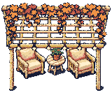
Inspect assembled pergola at 4x
string-lights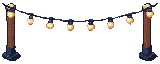
Inspect assembled string-lights at 4x
halloween-lamps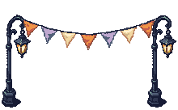
Inspect assembled halloween-lamps at 4x
Retirees: keep Batch B’s pink chair
The approved wicker chair already has pink cushions. Reuse it; only the cabbage bed is new.
autumn-shrub-a
WALL · 80 × 64 · Young family
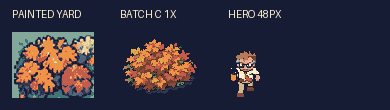
Inspect at 4x · Sprite PNG
autumn-shrub-b
WALL · 88 × 56 · Grill master
Inspect at 4x · Sprite PNG
autumn-shrub-c
WALL · 80 × 64 · Halloween
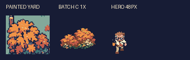
Inspect at 4x · Sprite PNG
white-flowers-a
WALK-THROUGH · 48 × 48 · Young family
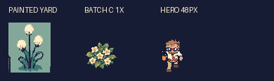
Inspect at 4x · Sprite PNG
white-flowers-b
WALK-THROUGH · 48 × 48 · HOA president
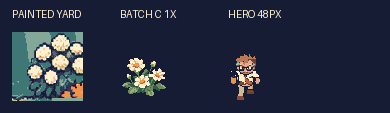
Inspect at 4x · Sprite PNG
string-light-posts
WALL · 160 × 64 · Grill master
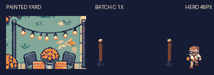
Inspect at 4x · Sprite PNG
string-light-strand
WALK-THROUGH · 160 × 64 · Grill master
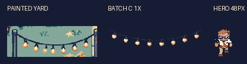
Inspect at 4x · Sprite PNG
cooler
BREAKABLE · 64 × 56 · Grill master
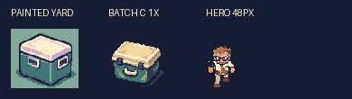
Inspect at 4x · Sprite PNG
cornhole-board-a
WALK-THROUGH · 64 × 56 · Grill master
Inspect at 4x · Sprite PNG
cornhole-board-b
WALK-THROUGH · 64 × 56 · Grill master
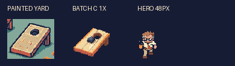
Inspect at 4x · Sprite PNG
tarp-lumber
WALL · 112 × 104 · Fixer-upper
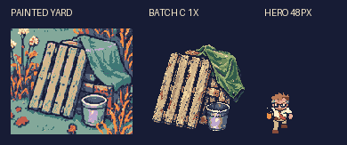
Inspect at 4x · Sprite PNG
worn-lawn-chair
WALL · 72 × 96 · Fixer-upper
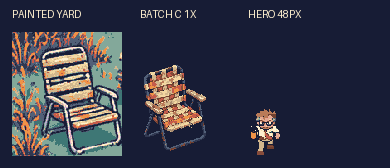
Inspect at 4x · Sprite PNG
weeds-a
WALK-THROUGH · 48 × 64 · Fixer-upper
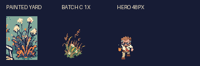
Inspect at 4x · Sprite PNG
weeds-b
WALK-THROUGH · 48 × 64 · Fixer-upper
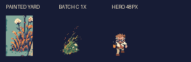
Inspect at 4x · Sprite PNG
weeds-c
WALK-THROUGH · 48 × 64 · Fixer-upper
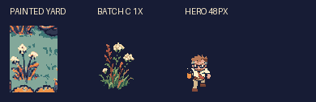
Inspect at 4x · Sprite PNG
pergola-roof
WALK-THROUGH · 160 × 80 · HOA president
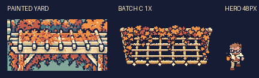
Inspect at 4x · Sprite PNG
pergola-posts
WALL · 160 × 136 · HOA president
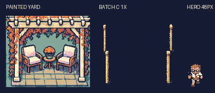
Inspect at 4x · Sprite PNG
pergola-chair
WALL · 48 × 64 · HOA president
Inspect at 4x · Sprite PNG
pergola-table
WALL · 32 × 48 · HOA president
Inspect at 4x · Sprite PNG
boxwood-hedge
WALL · 88 × 56 · HOA president
Inspect at 4x · Sprite PNG
sheet-ghost-a
BREAKABLE · 128 × 80 · Halloween
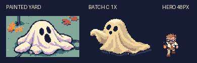
Inspect at 4x · Sprite PNG
sheet-ghost-b
BREAKABLE · 128 × 80 · Halloween
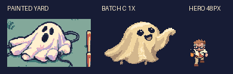
Inspect at 4x · Sprite PNG
halloween-lamp
WALL · 40 × 120 · Halloween
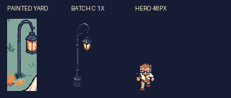
Inspect at 4x · Sprite PNG
halloween-bunting
WALK-THROUGH · 208 × 48 · Halloween
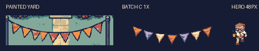
Inspect at 4x · Sprite PNG
fog-machine
BREAKABLE · 56 × 48 · Halloween
Inspect at 4x · Sprite PNG
fog-puff-small
WALK-THROUGH · 72 × 32 · Halloween
Inspect at 4x · Sprite PNG
fog-puff-large
WALK-THROUGH · 112 × 56 · Halloween
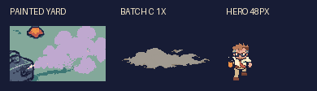
Inspect at 4x · Sprite PNG
beach-ball
WALK-THROUGH · 40 × 40 · Young family
Inspect at 4x · Sprite PNG
toy-car
WALK-THROUGH · 56 × 40 · Young family
Inspect at 4x · Sprite PNG
cabbage-bed
WALL · 128 × 80 · Retirees
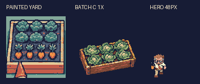
Inspect at 4x · Sprite PNG
Footprints are proposed art metadata. Navigation and draw order require Claude’s integration checks after approval.